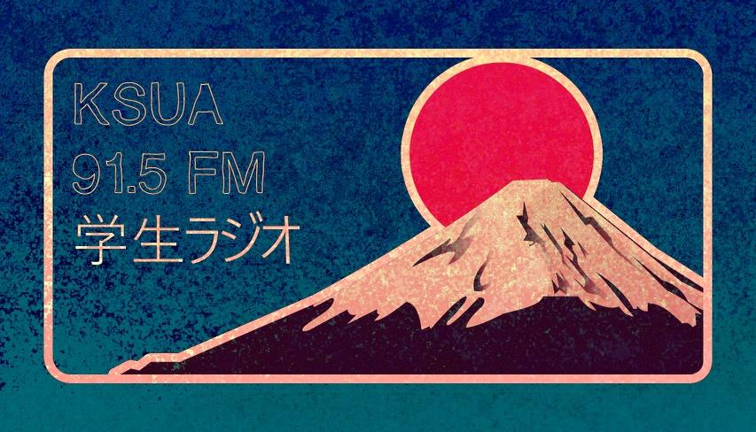
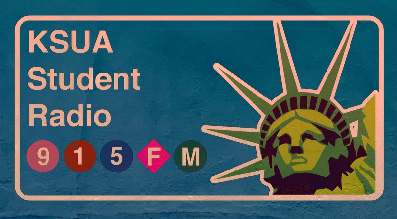

DJ Soul Glo
Soul Glo is a radio show that I DJ at the UAF student radio, KSUA 91.5 FM. I mainly play R&B music, from old school mowtown like The Impressions to more contemporary electro-soul like Busty and The Bass. You can hear it live most Tuesday’s from 7 to 8 AKST through the airwaves or online at the station’s homepage.
Sticker Design Competition
In Fall 2023 KSUA held a sticker design competition. Myself and DJ Jimmy (host of Brushing My Teeth to Merzbow) submitted the following designs and a few of them won.



Soul Glo Track Highlights 5/17/22
This week we featured a whole load of female artists. We’ve heard Yebba before on PJ Morton’s version of How Deep is Your Love, but this time we get her solo work. In all aspects from songwriting to vocal technicality Yebba’s work on this playlist is a masterclass. Yebba’s Evergreen manages to blend aspects of pop form, R&B bass lines and backing and gospel organ in an incredibly refreshing way. Jorja Smith’s Beautiful Little Fools provides an incredibly moving commentary about the way women are portrayed and put on display in media, with quite possibly the smoothest R&B backing I’ve ever experienced. Both Smith’s Lost & Found and Lianne La Havas’ Bittersweet discuss the many forms in which relationships end. Lost & Found paints the picture of a longing lover, reflecting and ultimately realizing they were more in love with an idea of being in a relationship rather than the person. Bittersweet interestingly feels like it takes the opposite approach describing a person who’s ready to move on. In general this playlist features intricate and relatable storytelling about the struggles in love, life and identity that are unique to women and no artists embodies this statement more than Arlo Parks.
Soul Glo Track Highlights 5/10/22
For the playlist this week I tried to incorporate a loose theme of songs that featured acoustic elements. I think that the tracks that most embody the theme this week are PJ Morton and Alex Isley’s acoustic rendition of ‘How Deep is Your Love’ and Victory’s rendition of the Stevie Wonder classic ‘Overjoyed’.
Soul Glo Track Highlights 5/3/22
This week had a mix of older and new songs. We started the playlist featuring a few throwback songs, Sade’s ‘Kiss of Life’, Stevie’s ‘Knocks Me Off My Feet’ and New Editions ‘Mr.Telephone Man’. All released in different eras from late 70’s to early 90’s to the early 2000’s yet the all seem to fit together with a similar vibe.
The new tracks that really stood out to me this week are ‘My Line’ performed by Reuben James featuring Col3trane, Jay Prince, Vula & Soweto Kinch. The track has a new wave spin on the classic 90’s new soul sound. The producing and delivery in the verse feels lowkey like something good track you might find on soundcloud, and the horn solo at the end manages to fit well while still delivering dense vocabulary à la Braxton Cook. I also really enjoyed the closing track ‘Nayhoo’ by Chon featuring Masego & Lophiile. This track was my first foray into neo soul with math rock influences, two genres that surprisingly, fit really well together.
Soul Glo Track Highlights 4/26/22
This week there was a greater focus on neo-soul and the newer electronic influences. I played several tracks from Busty and the Bass’ sophomore album ‘Uncommon Good’. Both ‘Up Top’ and ‘Things Change’ have that electric neo-soul feel, while still maintaining an old school vibe with the lead singer, Nick Ferraro raspy vocals. I particularly enjoy the opening to ‘Up Top’, it’s a really creative and unique way to jump in to a song and serves as a great introduction to the vibe that Busty and the Bass give.
I think my favorite track from this playlist is another song from Samm Henshaw, this time from his 2022 album Untidy Soul. Henshaw’s ‘Take Time’ really does it all, the horn lines are dense with jazz vocabulary yet they still manage to fit so well around the vocals. The lyrics on the whole album(specifically this song) are filled with intimate notions of self-hood while still maintaining a lighthearted attitude. The song features Tobe Nwigwe rapping on the bridge and although the subject matter might jarring for some, the verse serves as a beautiful, prophetic message to those who confuse lust with love.
Soul Glo Track Highlights 4/19/22
The playlist I put together this week highlighted the kind of vibe we hear on D’Angelo’s ‘Spanish Joint’ and ‘Untitled (How Does It Feel)’. This free, bass driven r&b vibe is very ubiquitous in 2000’s classic soul genre. In general there is no going wrong with playing a little D’Angelo! For first time listeners I would recommend ‘I Found My Smile Again’, I find that it strikes the perfect balance between the bluesiness found in reprise of ‘How Does It Feel’ and the exaggerated layers of vocal harmony found in ‘Spanish Joint’ all while not overwhelming the listener with a 4+ minute run time.
Samm Henshaw’s ‘How Does It Feel?’ is another track from this
playlist that I think really captures the new sound we are hearing in
the neo-soul, and indie pop scenes. Lots of gospel influences in this
track from the stacked vocal harmonies on the hook, to Henshaw’s adlibs
between each section.